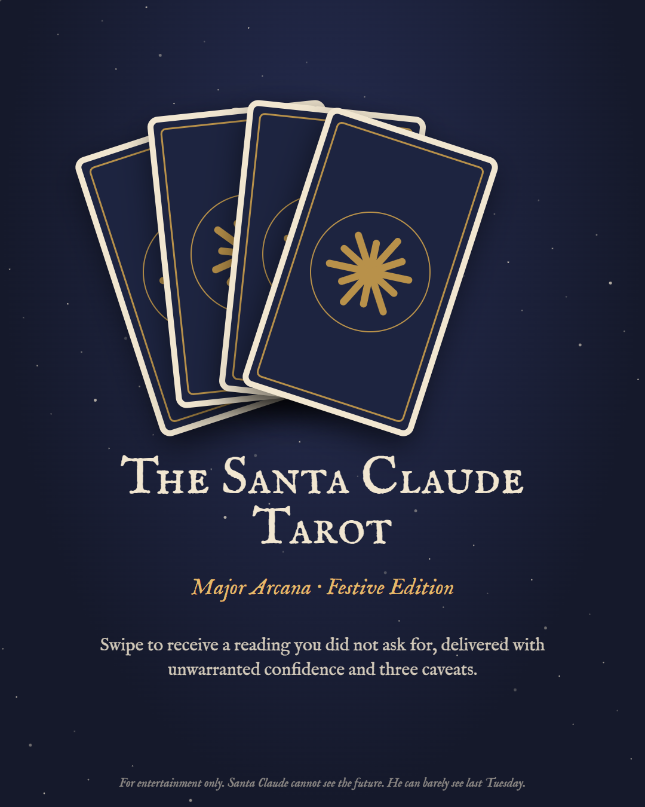

Haiku
Small. Fast. Speaks only in 5-7-5. Delivers before you've finished asking.
Part Father Christmas, part helpful AI assistant. He answers millions of letters in a single night, adds a gentle caveat to every one, and would like to make it clear that his suit is not red.
SOUND ON · 1 MIN 49
Santa and an AI assistant have the same job: an impossible number of requests from people they've never met, all expecting warmth, wisdom and a verdict on whether they've been good. Santa Claude is what happens when the two merge.
Small. Fast. Speaks only in 5-7-5. Delivers before you've finished asking.
Wears hi-vis. Does most of the actual pulling. Never mentioned in the song. Mustn't grumble.
Monocle, top hat. Thinks very hard about every chimney. Eats a fortune in carrots.
4,012 jailbreak attempts. One success, which we now call the Easter Incident.
Eight cards of the Major Arcana, lightly retrained. Delivered with unwarranted confidence and three caveats.
For entertainment only. Santa Claude cannot see the future. He can barely see last Tuesday.

Verified (by himself, honestly). Looking for something long-term, as long-term as his context window allows.
santa-claude v12.25, festive preview. ChimneyBench (Hard): 97.2%. Known limitations: may hallucinate a bicycle.
The Frontier Model Edition. Haiku wins on speed, Opus on reasoning, Sonnet on hi-vis compliance and Rudolph on sheer persistence.
“Chimney. Soot. Parcel. / Seventeen syllables, gone. / Next house. Next house. Next.”
Poppy, 7, asked for a real unicorn, a phone, the removal of her brother and a surprise. Santa Claude replied in full, with footnotes.
Issued by the Met Elf-ice at 00:48 on Christmas Eve.
“Fair Isle Jumper: knitted. Itchy. Visibility obscured by Nan.”
Every joke checked for accuracy, harm and festive cheer, then explained anyway.
Every night, millions of people write to someone they can't see. And someone writes back.
*Santa Claude can make mistakes. Please double-check your presents.